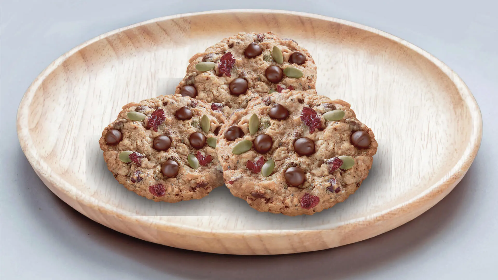

Chef: Ying Chen
| 1 | egg |
| 1 1/2 cups | regular oats (375 mL) |
| 3/4 cup | organic all-purpose flour (or non-organic flour) (175 mL) |
| 3/4 cup | brown sugar (175 mL) |
| 1/2 cup | unsalted margarine, softened (or butter) (125 mL) |
| 1/2 tsp | baking soda (2 mL) |
| 1/2 tsp | baking powder (2 mL) |
| 1/2 tsp | ground cinnamon (2 mL) |
| 1/2 tsp | vanilla extract (2 mL) |
| 1/2 cup | Hershey Pure Semi-Sweet Chocolate Chips (125ml) |
| 1 tbsp | chia seeds (15 mL) |
| 1/4 cup | dried cranberries (50 mL) |
| 1/2 cup | pumpkin seeds (50 mL) |
| some | salt |